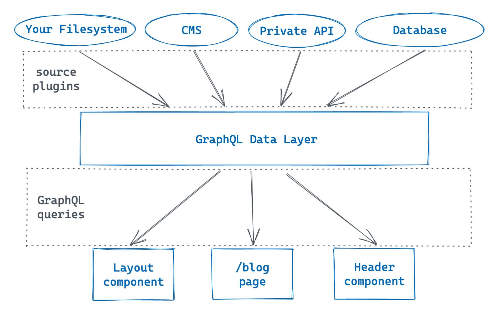

画像出典：Part 4: Query for Data with GraphQL | Gatsby
- GatsbyJSのデータレイヤについては、「Part 4: Query for Data with GraphQL | Gatsby」のページで紹介されている画像が分かり良いので引用させていただいた。GatsbyJSがどのようにしてデータを取り扱うのかイメージしやすいはずだ。
- GatsbyJSのデータレイヤの仕組みは以下ようである。
- データは各所いろいろなところに存在して構わない。パソコンのフォルダ内や、ヘッドレスCMSなど、GraphQLの技術を使ってアクセスできる場所であればどこでもいい。複数あってもかまわない。
- それらの各所にあるデータは、ソースプラグインを導入することで取得することができる。ソースプラグインには、gatsby-source-filesystem、gatsby-source-contentfulなどがある。
- 取得したデータは、GraphQLデータレイヤから GraphQLクエリを使って各ページへ表示することになる。
- GraphQLに関するクエリ情報は、GraphiQL（http://localhost:8000/___graphql）にアクセスすることで確認できる。ページの構成は以下のようにおおまかに 3列に分かれている。左側にあるエクスプローラーで確認したいデータをチェックし、必要ならクエリエディタで編集し、実行ボタンを押すと右側のウィンドウに結果が表示される。
- 左：エクスプローラー
- 中：クエリエディタ
- 右：結果ウィンドウ